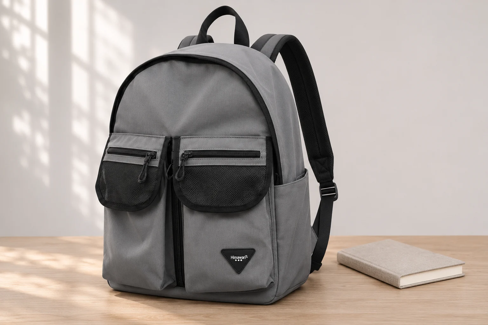
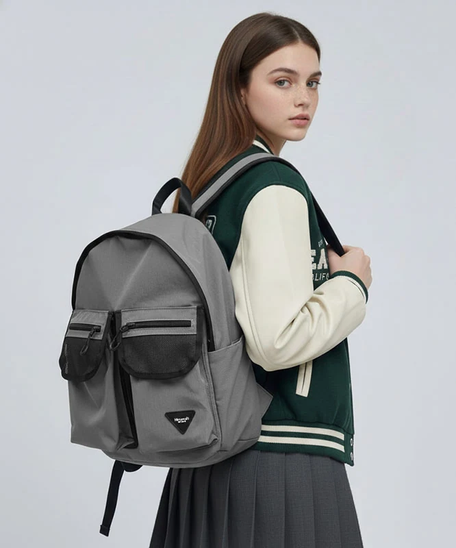
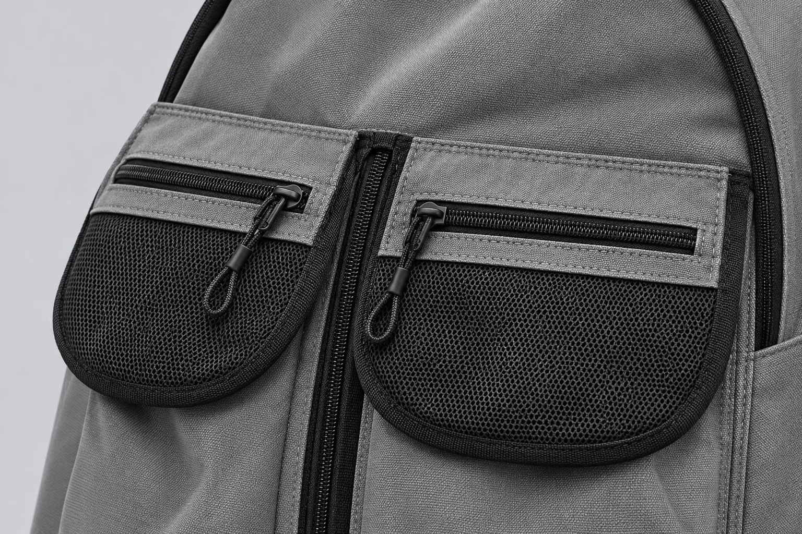

리사이클링 백팩이라는 이름, 어느 부분이 재생 소재일까

리사이클링 백팩을 찾을 때 상품명에서 그 단어를 발견하면 다음 질문이 생깁니다. 겉감이 재생 소재라는 뜻일까요. 안감과 손잡이까지 포함할까요. 가방 한 개에는 여러 원단과 부품이 들어가므로, 이름에 붙은 말만으로 재생 소재를 쓴 자리를 모두 정하기는 어렵습니다. 어떤 부위를 어떤 원료로 만들었다는 설명인지 읽어야 선택 조건과 연결됩니다.
히마와리 No.1230 그레이의 공개 상품명에도 리사이클링이라는 단어가 들어갑니다. 확인한 소재 정보는 겉감 나일론, 안감 폴리에스터입니다. 2026년 9월 14일 제조사 카탈로그 15페이지를 기준으로 외부 크기는 가로 32 × 세로 40 × 폭 18cm, 무게는 400g으로 안내됩니다. 재생 소재를 사용한 부위와 함량, 인증은 이번에 대조한 자료에서 확인하지 못했습니다. 이 구분을 남긴 채 상품 설명의 문장을 읽어보겠습니다.

나일론 옆에 아직 적히지 않은 정보
나일론과 폴리에스터는 섬유의 종류를 알려주는 이름입니다. 원료가 재생 원료인지는 별도로 읽을 정보입니다. 겉감 나일론이라는 문장만으로 재생 나일론이라고 바꾸어 적을 수 없고 재생이라는 단어가 없다고 새 원료만 썼다고 단정할 수도 없습니다. 지금 확인한 것은 겉감에 붙은 섬유 이름까지입니다.
상품명을 줄여 옮길 때도 이 차이가 남습니다. 리사이클링 백팩을 재생 나일론 백팩으로 바꾸면 원래 이름에 없던 섬유와 원료의 관계를 덧붙입니다. 안감이 폴리에스터라는 정보와 결합해 페트병을 재활용한 안감이라고 설명하는 것 역시 원료의 출처를 새로 정하는 일입니다. 해당 모델의 안내에서 그 연결을 확인하기 전에는 그대로 쓰기 어렵습니다.
소재를 비교하는 메모에는 제품명과 소재 항목을 각각 옮기면 됩니다. No.1230이라는 모델에 리사이클링이라는 이름이 붙어 있다는 사실, 겉감과 안감의 섬유가 따로 안내된다는 사실이 함께 남습니다. 둘을 한 문장으로 압축해 재생 소재의 위치를 대신 결정하지 않는 방식입니다.
회색 몸판 하나에도 부위 이름은 남습니다
No.1230의 사진에는 회색 몸판과 나란한 두 앞포켓, 위쪽의 검은 메쉬 모양 덮개가 보입니다. 손잡이와 어깨끈도 검은색입니다. 사진 속 색의 경계는 어느 부위를 가리키는지 설명할 때 쓸 수 있습니다. 회색은 재생 소재이고 검은색은 다른 원료라는 식의 구분을 뒷받침하지는 않습니다.
다른 가방의 설명에 재생 원단 사용이라는 문장이 있다고 가정해 볼까요. 몸판 겉감만 가리키는지, 포켓 원단도 포함하는지 아직 알기 어렵습니다. 겉감에 재생 나일론 사용이라고 적혀 있다면 설명이 가리키는 부위가 조금 더 좁아집니다. 여기서 안감이나 웨빙, 지퍼까지 같은 원료로 만들었다는 문장을 더할 근거는 생기지 않습니다.
가방 전체를 부르는 이름과 부위별 설명은 길이가 다릅니다. 짧은 상품명에서 모든 부품의 재료를 읽어내려고 하면 빈 부분을 짐작으로 채우기 쉽습니다. 상품명에서 발견한 재생 소재라는 조건을 실제로 비교하려면, 그 말이 붙은 부위 이름을 상세 설명에서 함께 찾아두는 편이 정확합니다.

비율을 만나면 무엇의 비율인지 읽습니다
다음은 표기를 읽는 연습을 위한 가상 예시이며 No.1230의 사양이 아닙니다. 겉감에 재생 나일론 50%를 썼다는 문장과 가방 전체 중량의 50%가 재생 원료라는 문장을 나란히 놓아봅니다. 같은 50%가 있어도 앞 문장은 겉감을, 뒤 문장은 가방 전체를 기준으로 삼습니다. 비교표에 숫자만 옮기면 이 차이가 사라집니다.
가상 설명의 겉감 수치를 가방 전체 수치로 바꾸려면 겉감이 차지하는 양과 나머지 부분의 원료 정보도 필요합니다. 겉감이 재생 소재 100%라는 예시를 읽어도 안감과 끈, 부품까지 모두 재생 소재 100%라고 넓힐 수는 없습니다. 이 예시들의 비율은 제품에 적용한 측정값이 아니라 문장이 가리키는 범위를 구별하기 위한 숫자입니다.
혼용률과 재생 원료 함량이 같은 줄에 적힐 때에는 수식하는 대상을 더 자세히 봅니다. 겉감의 섬유 구성 중 나일론이 얼마인지와 그 나일론 원료 중 재생 원료가 얼마인지는 서로 다른 질문입니다. 설명이 어느 질문에 답했는지 확인하지 않은 채 두 비율을 같다고 적으면 원료 정보를 부풀릴 수 있습니다.
No.1230의 400g도 재생 소재의 양을 계산할 자료로 쓰지 않습니다. 현재 확인한 자료에 재생 함량과 산정 기준이 없기 때문입니다. 가방 중량을 알고 있다는 이유로 임의의 비율을 곱하거나, 겉감과 안감의 면적을 사진에서 추정해 재생 원료의 그램 수를 만들어낼 수는 없습니다.
인증 이름이 있다면 연결된 모델을 봅니다
Textile Exchange의 RCS 안내는 Recycled Claim Standard를 공급망에서 재생 원료를 검증하고 추적하는 관리 연계 기준으로 설명합니다. 재생이라는 표현에 어떤 근거를 붙이는지 이해할 때 참고할 수 있는 예입니다. 이 기준을 소개하는 일과 특정 백팩이 그 인증을 받았다고 확인하는 일은 따로 남습니다.
제품 설명에서 인증 이름을 만난다면 어느 모델의 어느 소재를 설명하는 자료인지 함께 읽습니다. 같은 브랜드의 다른 가방에 관한 안내나 원단 공급업체를 소개한 문장만으로 눈앞의 상품에 인증을 옮겨 붙일 수는 없습니다. 인증명만 잘라 보관하기보다 해당 상품과 적용 부위가 드러나는 설명을 함께 두면 무엇을 확인했는지 다시 읽을 수 있습니다.
No.1230은 이번에 확인한 자료만으로 RCS나 GRS 인증 제품이라고 소개하지 않습니다. 인증을 확인하지 못한 상태와 재생 원료를 쓰지 않았다고 확인한 상태도 구별합니다. 비어 있는 정보는 그 상태로 남겨야 나중에 모델별 자료가 추가됐을 때 확인된 내용만 보탤 수 있습니다.
구매 조건으로 남길 만큼만 구체적으로
재생 소재를 쓴 겉감을 구매 조건으로 삼는 사람도 있고 안감의 원료까지 알고 싶은 사람도 있습니다. 같은 상품명에서 출발해도 필요한 답이 다릅니다. 전자는 겉감의 재생 여부와 함량을, 후자는 안감의 해당 정보를 찾습니다. 원하는 부위를 먼저 정하면 재생 소재인가요라는 넓은 질문에서 멈추지 않고 어떤 자료가 더 필요한지 짚을 수 있습니다.
재생 원료에 관한 설명을 찾았다고 내구성이나 수명, 환경 부담의 차이까지 함께 확인한 것도 아닙니다. 그런 비교에는 각각의 근거가 필요합니다. No.1230을 살피는 현재 메모에는 공개 상품명의 리사이클링, 겉감 나일론, 안감 폴리에스터를 남길 수 있습니다. 재생 원료의 적용 부위와 함량은 확인 전으로 둡니다. 짧은 이름을 길게 해석하기보다, 부위가 적힌 한 문장을 더 찾는 데서 다음 비교를 시작할 수 있습니다.